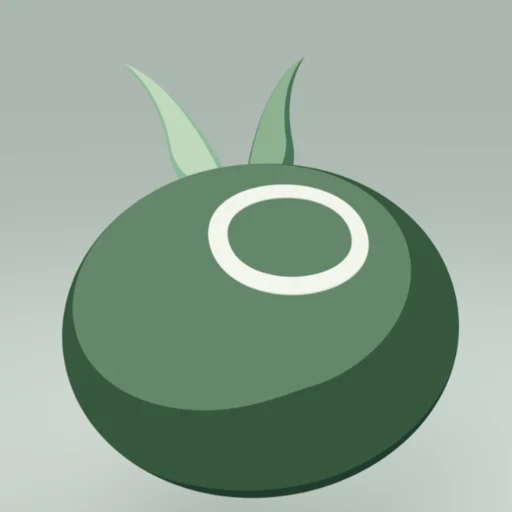
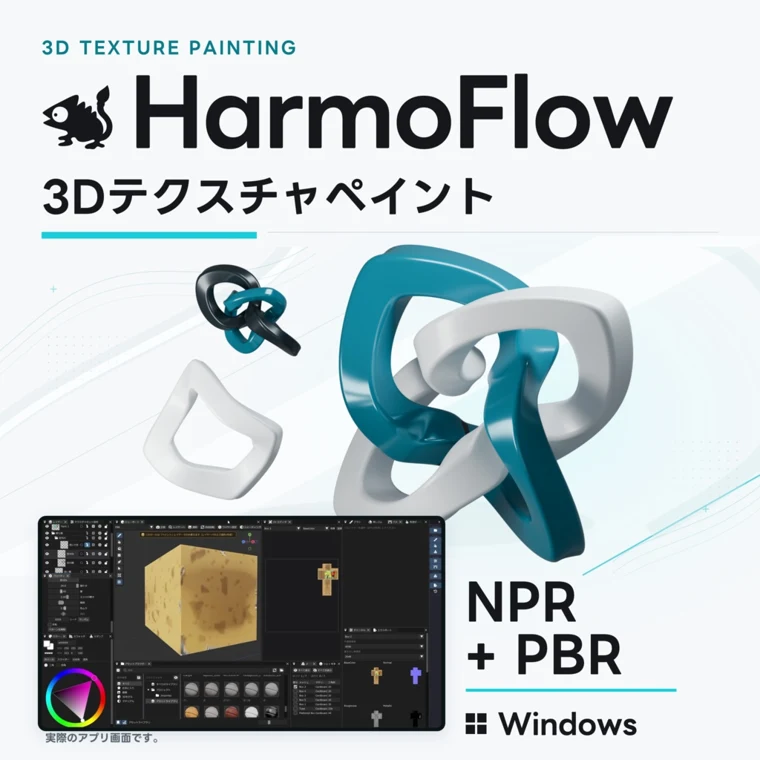
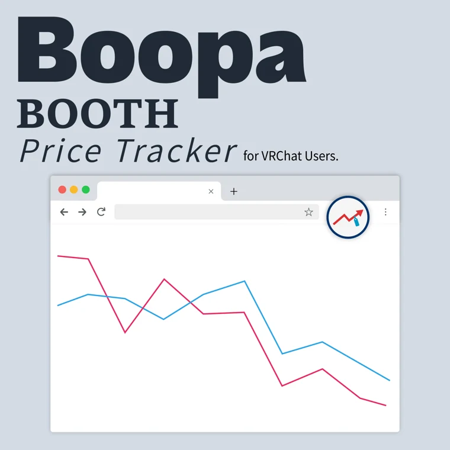
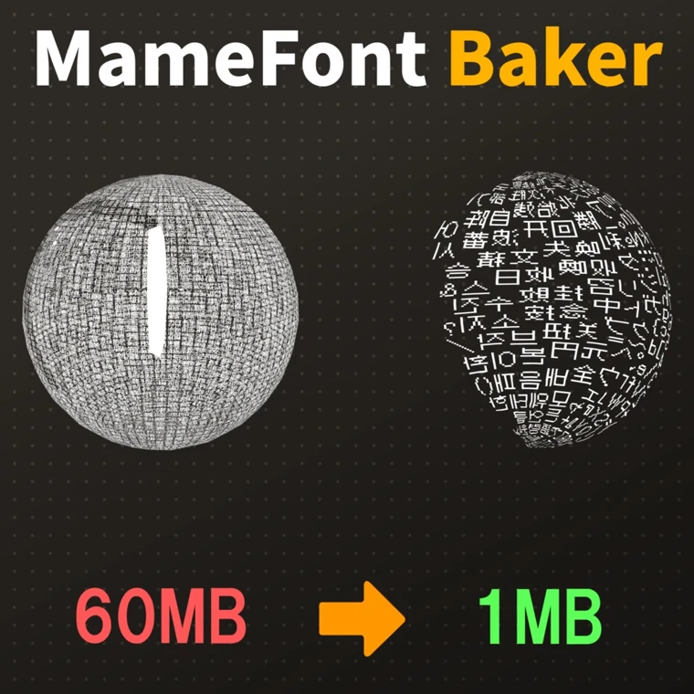
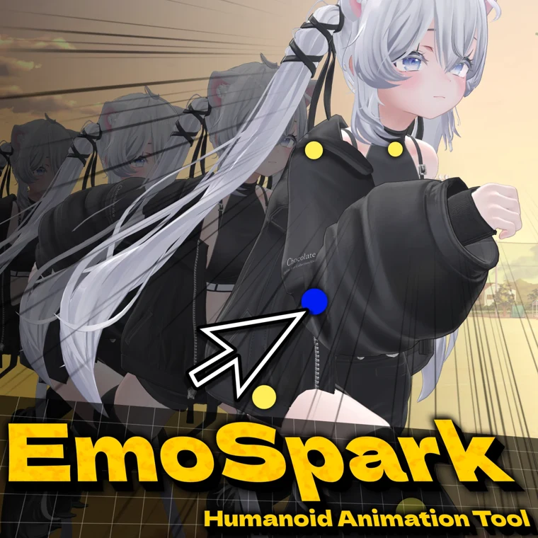

MAMETARO / PERSONAL PORTFOLIO
Windowsソフト、Unityツール、Chrome拡張、VRChatワールドを制作しています。

SELECTED WORKS

Windows / 3Dペイント
3Dモデルに直接描ける、テクスチャ・マテリアル制作ソフト。

Chrome拡張 / BOOTH
BOOTH商品の価格推移を確認できるChrome拡張機能。

Unity / TextMeshPro
使う文字を集めて、軽量なTextMeshProフォントアセットを作るツール。

Unity / アニメーション
Humanoidアバターのポーズやアニメーションを編集するツール。
VRCHAT WORLDS
NPC․ASMRなどのASMRワールドや、Udonを使ったゲームを公開しています。
CONTACT
BOOTHに関するお問い合わせショップのメッセージから
その他のお問い合わせtyarity3@gmail.com